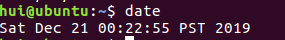
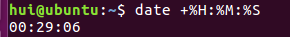
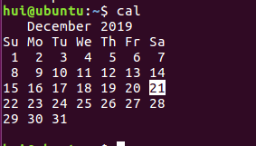
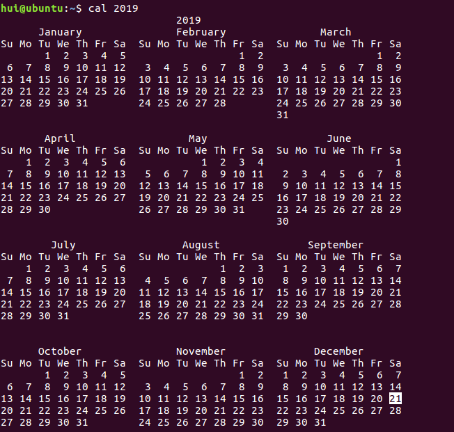
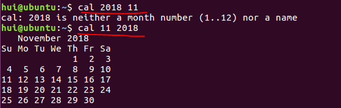
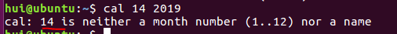
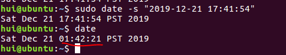
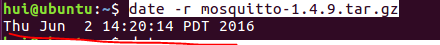
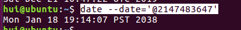

1.在linux中要显示日期，则可以直接输入指令date

2.如果想以这样2016/12/26的方式输出呢，那就是,Y是年份，m是月份，d是日
date +%Y/%m/%d
3.如果要显示时间，则date +%H:%M:%S

4.显示当前的日历呢，直接输入cal

5.要查看整年的日历呢 cal+年份

6.要查看某一年的某一月的日历呢，cal + 月+ 年，先月份后年份欧，否则会报错

7.cal的错误提示功能

8.修改系统时间sudo date -s "2019-12-21 17:41:54"
9.但是查看之后日期时间没有改过来，需要

将当前时间和日期写入BIOS，避免重启后失效
hwclock -w
所以可以通过date -s "YYYY-MM-DD hh:mm:ss" &&hwclock --systohc来修改系统时间
这两个操作需要root权限
10.当然也可以使用它来查看文件的日期 使用date -r +文件名

11.将秒数转换为日期时间 date --date='@2147483647'

12.
欢迎加入C和C++交流群：